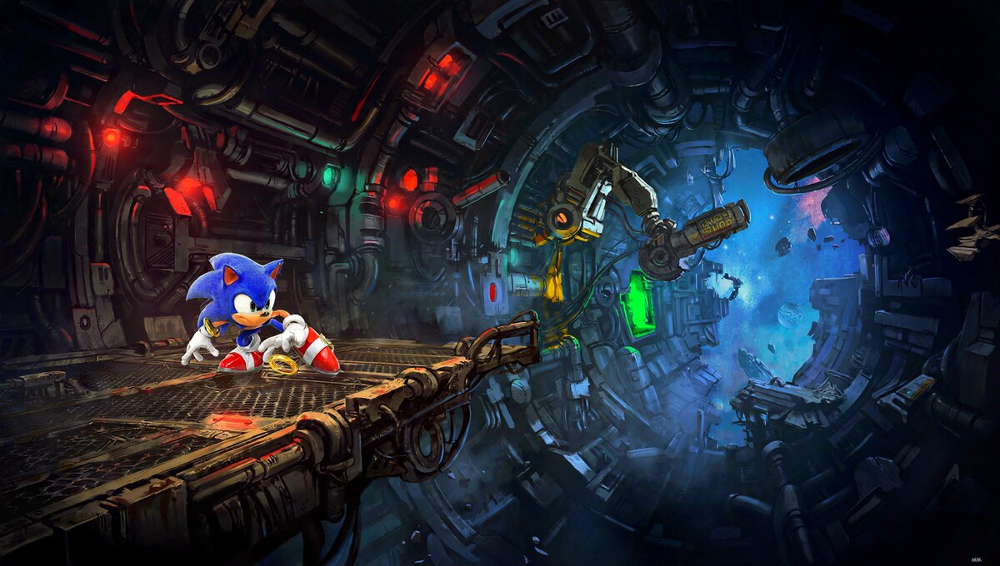

Lucas S. Vieira
O agente se expande
Guilda de IA
qwen35moe já suportada no ik-llama 🔓⚠️llama-server 🔓cohere2_moe mergeado no ikllama.cpp (PR #1945, 10/06) 🔓minimax-community. 1T params MoE = fora do alcance de GPUs consumer, mas 23B ativos e MSA são relevantes pra arquitetura
Na S06, o agente usou uma ferramenta por vez.
Mas e quando precisa de duas ou mais?
"Quanto é 234 × 987 + 100?"
Thought: Preciso multiplicar, depois somar
Action: calculate(234, 987, "multiply") → 230958
Action: calculate(230958, 100, "add") → 231058
Answer: "O resultado é 231.058."
O create_agent repete Thought→Action→Observation automaticamente.
from langchain.agents import create_agent
agente = create_agent(llm, [calculate, get_time, get_word_length])
resultado = agente.invoke({"messages": "Quanto é 234 vezes 987 mais 100?"})
print(resultado["messages"][-1].content)
# "O resultado de 234 × 987 + 100 é 231.058."
Uma chamada. Múltiplas ferramentas encadeadas. Automático.
Se duas ferramentas parecem fazer a mesma coisa:
# ❌ Vagas — LLM confunde
@tool
def search_wiki(query: str) -> str:
"""Search for information."""
@tool
def search_web(query: str) -> str:
"""Search for information."""
Search for information × 2 → modelo não sabe qual usar.
# ✅ Específicas — LLM distingue
@tool
def search_wiki(query: str) -> str:
"""Search Wikipedia for factual and historical information.
Use for established facts about people, places, events."""
@tool
def search_web(query: str) -> str:
"""Search the web for current information.
Use for news, prices, and real-time data."""
Regra: cada descrição explica quando usar aquela ferramenta.
O LLM nem sempre acerta. Problemas comuns:
Pergunta: "Que horas são?"
LLM chama: calculate em vez de get_time
# ❌ Vaga
@tool
def get_time() -> str:
"""Returns current date and time."""
# ✅ Específica
@tool
def get_time() -> str:
"""Returns the current date and time.
Use when the user asks 'what time is it',
'what date is today', or about the current moment."""
LLM manda operation"234 vezes 987"= em vez de "multiply"
# ✅ Solução: documentar valores no docstring
@tool
def calculate(a: float, b: float, operation: str) -> float:
"""Performs a mathematical operation between two numbers.
Use when you need to perform numeric calculations.
Args:
a: First number
b: Second number
operation: One of 'add', 'subtract', 'multiply', 'divide'
"""
Pydantic rejeita argumentos com tipo errado (ex.: passar texto onde espera número). O agente recebe o erro e pode corrigir automaticamente. Mas se acontece com frequência, a descrição da ferramenta precisa melhorar.
Até agora, você escreveu as ferramentas com @tool.
E se outra pessoa escreveu?
MCP — Model Context Protocol
math_server.py)from mcp.server.fastmcp import FastMCP
mcp = FastMCP("Math")
@mcp.tool()
def add(a: int, b: int) -> int:
"""Add two numbers together."""
return a + b
@mcp.tool()
def multiply(a: int, b: int) -> int:
"""Multiply two numbers together."""
return a * b
if __name__ == "__main__":
mcp.run(transport="stdio")
Quase idêntico ao @tool, mas @mcp.tool() e FastMCP.
from mcp import ClientSession, StdioServerParameters
from mcp.client.stdio import stdio_client
from langchain_mcp_adapters.tools import load_mcp_tools
from langchain.agents import create_agent
server_params = StdioServerParameters(
command="python", args=["math_server.py"])
async with stdio_client(server_params) as (read, write):
async with ClientSession(read, write) as session:
await session.initialize()
tools = await load_mcp_tools(session)
agente = create_agent(llm, tools)
resultado = await agente.ainvoke(
{"messages": "Quanto é 3 + 5 multiplicado por 2?"})
Ferramentas MCP viram @tool do LangChain — o agente não sabe a diferença.
# Mesmo math_server.py, mas rodando como servidor HTTP
mcp = FastMCP("Math")
@mcp.tool()
def add(a: int, b: int) -> int:
"""Add two numbers together."""
return a + b
@mcp.tool()
def multiply(a: int, b: int) -> int:
"""Multiply two numbers together."""
return a * b
# Roda em http://localhost:8000 (ou qualquer host remoto)
mcp.run(transport="streamable-http")
from mcp import ClientSession
from mcp.client.streamable_http import streamablehttp_client
from langchain_mcp_adapters.tools import load_mcp_tools
from langchain.agents import create_agent
# Aponta pra URL — pode ser localhost ou um servidor remoto
async with streamablehttp_client(
"http://localhost:8000/mcp"
) as (read, write):
async with ClientSession(read, write) as session:
await session.initialize()
tools = await load_mcp_tools(session)
agente = create_agent(llm, tools)
# API idêntica — só muda como conecta
| S06 | S07 | |
|---|---|---|
| Ferramentas | @tool — você escreve |
MCP — alguém escreveu |
| Código | bind_tools + create_agent |
load_mcp_tools + create_agent |
| Origem | Seu Python | Servidor externo |
Pra o agente, ferramenta é ferramenta. Não importa de onde veio.
from langchain_mcp_adapters.client import MultiServerMCPClient
client = MultiServerMCPClient({
"math": {
"command": "python",
"args": ["math_server.py"],
"transport": "stdio",
},
"weather": {
"url": "http://localhost:8000/mcp",
"transport": "http",
}
})
tools = await client.get_tools()
agente = create_agent(llm, tools)
# Agente tem ferramentas de math E weather
Monte um agente combinando ferramentas de fontes diferentes — sem código de integração.
"Ferramentas transformam conversa em ação. MCP transforma integração em padrão."
create_agent encadeia ferramentas automaticamente